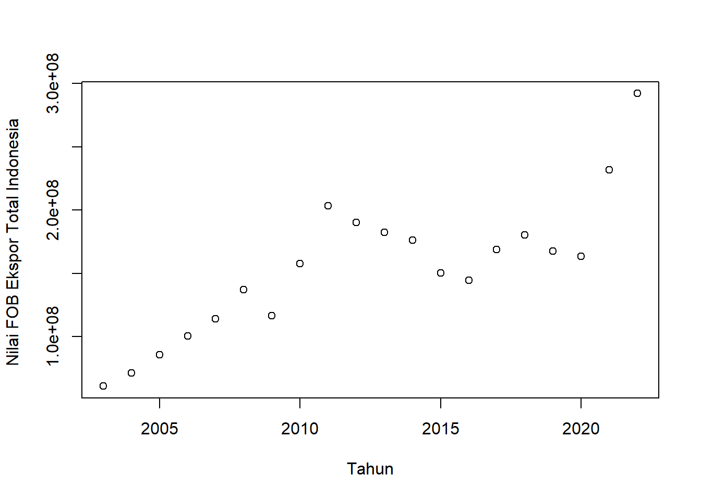
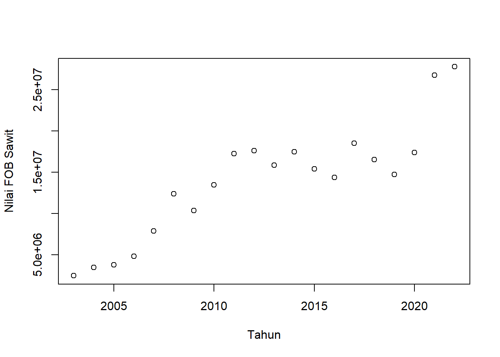
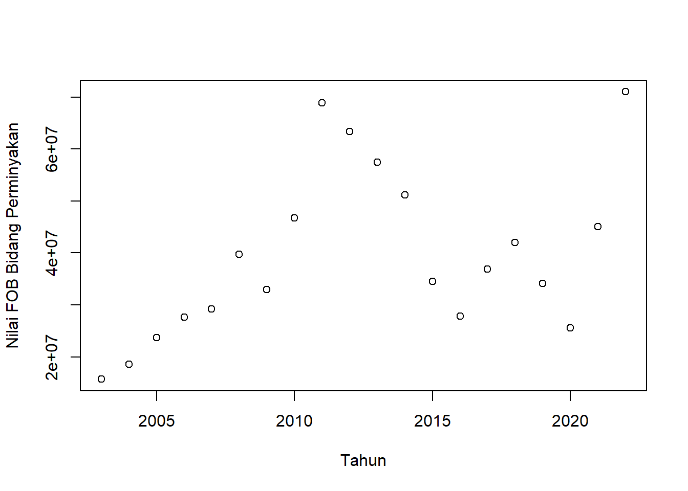
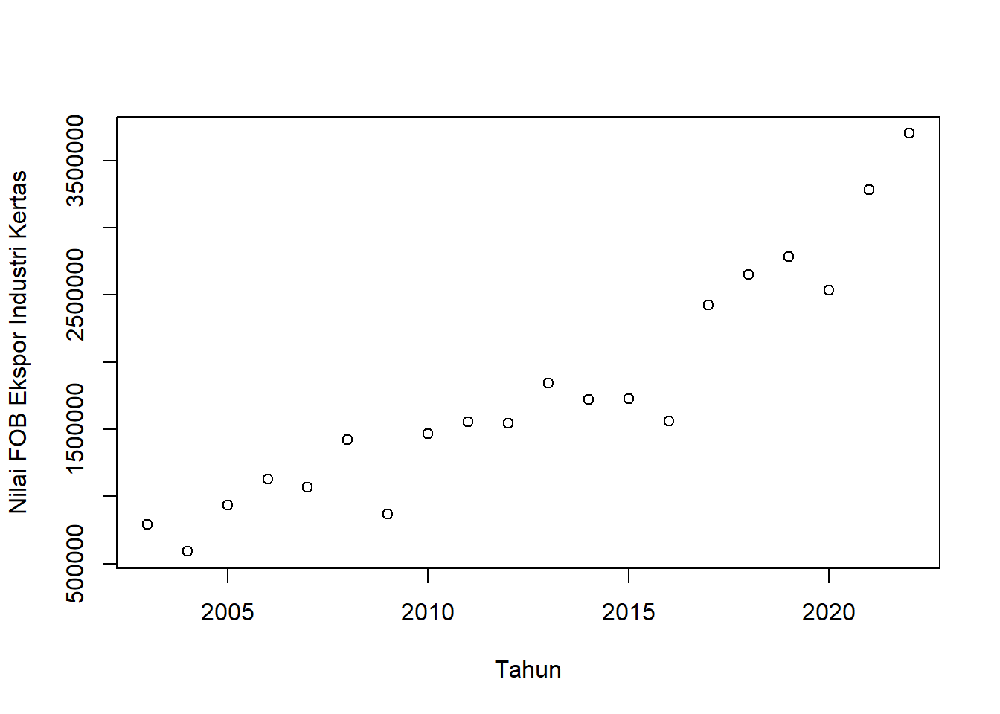
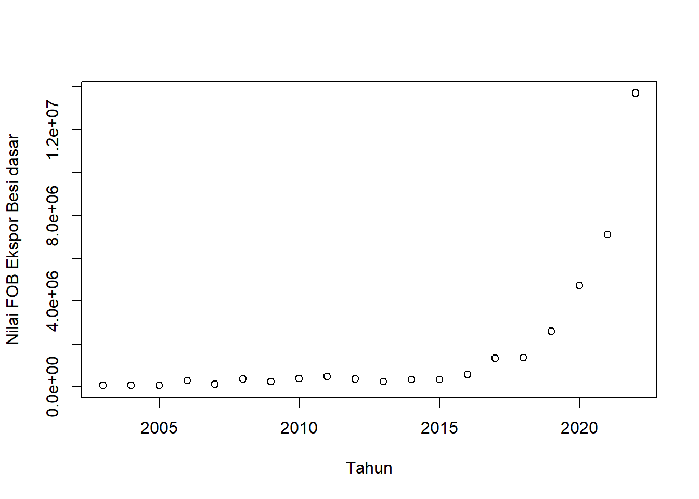
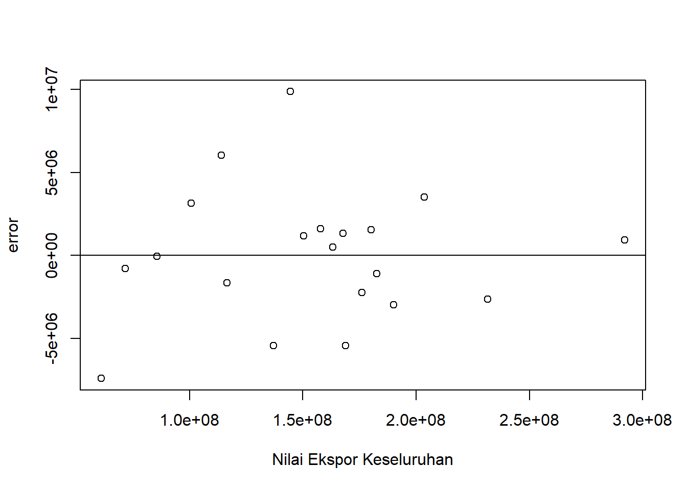
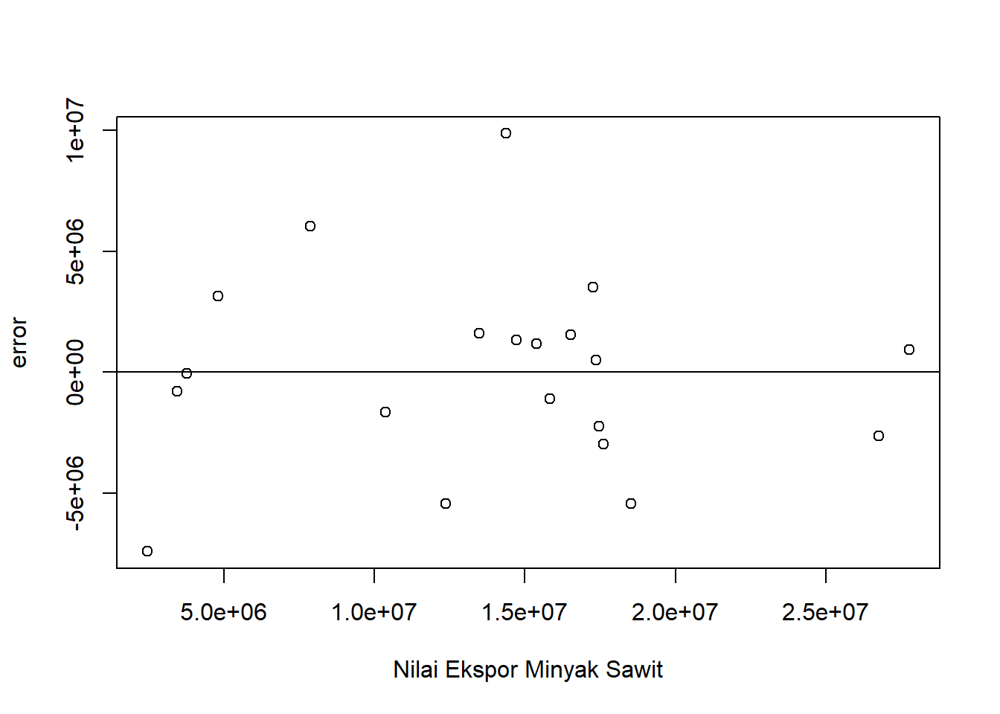
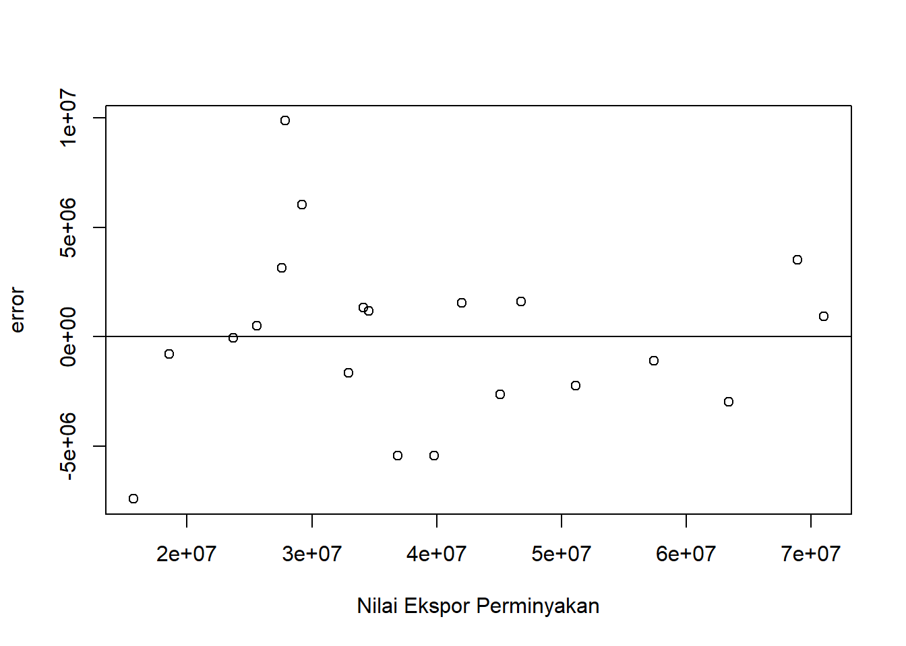
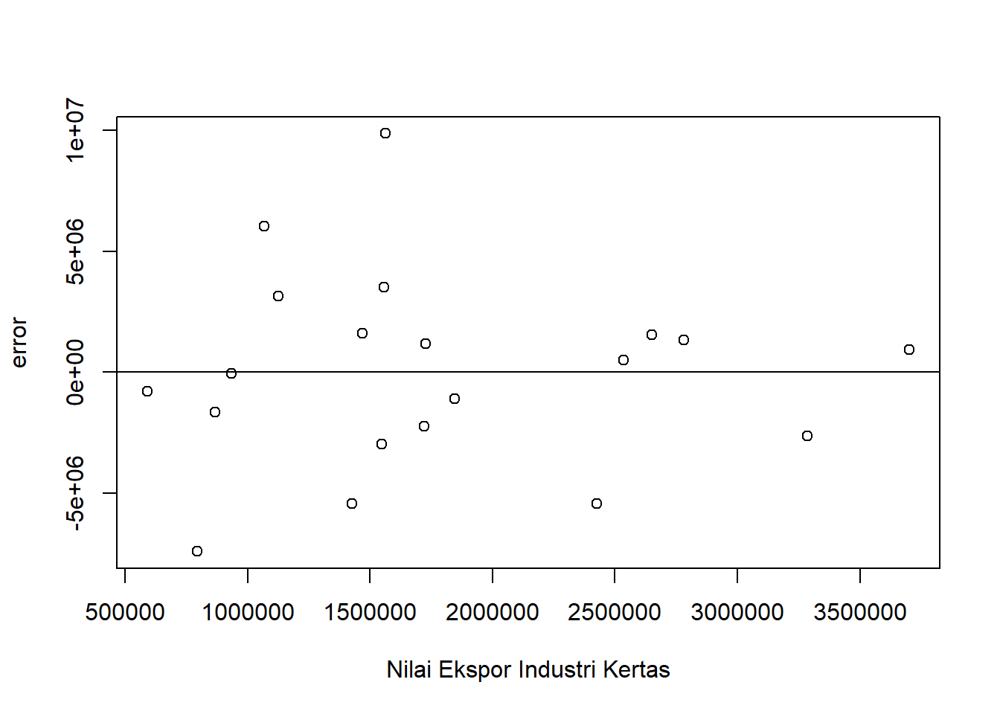
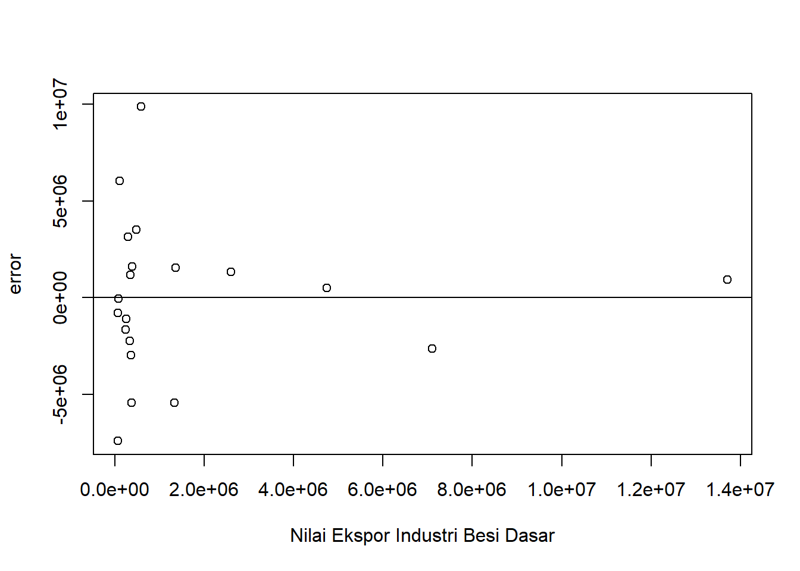

setwd("D:/METOPEL UAS/ILA METOPEL")
library(readxl)
library(tidyverse)
library(kableExtra)Analisis Pengaruh Ekspor Komoditas Unggulan terhadap Perkembangan Industri Indonesia.
Metode Penelitian Politeknik APP Jakarta

1 Pendahuluan
1.1 Latar belakang
Perkembangan industri di suatu negara seringkali menjadi indikator penting dari kemajuan ekonomi negara tersebut. Salah satu cara untuk mengukur perkembangan industri adalah melalui kinerja ekspor industri terkait. Ekspor yang meningkat menunjukkan bahwa industri tersebut mampu bersaing di pasar global dan memproduksi barang atau jasa yang berkualitas tinggi.
Dalam penelitian ini, kita akan menganalisis kinerja ekspor dari beberapa industri kunci di Indonesia, yaitu industri perkebunan yang diwakili oleh komoditas sawit, industri perminyakan yang diwakili oleh minyak mentah, industri pengolahan kertas, dan industri besi dan baja dasar yang diwakili oleh besi. Variabel dependen dalam analisis ini adalah ekspor keseluruhan, sementara variabel independennya adalah ekspor dari masing-masing industri tersebut.
Metode yang digunakan dalam penelitian ini adalah regresi linear. Dengan metode ini, kita dapat mengetahui sejauh mana variabel independen (ekspor dari masing-masing industri) mempengaruhi variabel dependen (ekspor keseluruhan). Hasil dari penelitian ini diharapkan dapat memberikan gambaran yang lebih jelas tentang bagaimana perkembangan industri di Indonesia dapat diukur melalui kinerja ekspor mereka. Selain itu, hasil penelitian ini juga dapat menjadi bahan pertimbangan bagi pemerintah dalam membuat kebijakan yang berkaitan dengan industri-industri tersebut.
1.2 Ruang lingkup
Ruang Lingkup Penelitian
Penelitian ini berfokus pada analisis kinerja ekspor dari beberapa industri kunci di Indonesia, yaitu industri perkebunan yang diwakili oleh komoditas sawit, industri perminyakan yang diwakili oleh minyak mentah, industri pengolahan kertas, dan industri besi dan baja dasar yang diwakili oleh besi.
Berikut adalah ruang lingkup penelitian ini:
Analisis Kinerja Ekspor: Penelitian ini akan menganalisis kinerja ekspor dari masing-masing industri tersebut. Ini melibatkan pengumpulan data tentang volume ekspor dari masing-masing industri dan analisis tren seiring waktu.
Penggunaan Metode Regresi Linear: Penelitian ini akan menggunakan metode regresi linear untuk menentukan hubungan antara ekspor keseluruhan (variabel dependen) dan ekspor dari masing-masing industri (variabel independen).
Fokus pada Industri Tertentu: Penelitian ini akan berfokus pada industri perkebunan, perminyakan, pengolahan kertas, dan besi dan baja dasar. Meskipun ada banyak industri lain di Indonesia, penelitian ini memilih untuk fokus pada industri-industri ini karena peran penting mereka dalam ekonomi Indonesia.
1.3 Rumusan masalah
Berikut adalah beberapa rumusan masalah yang relevan dengan topik analisis perkembangan industri berdasarkan kinerja ekspor:
Bagaimana hubungan antara ekspor keseluruhan dengan ekspor dari industri perkebunan, perminyakan, pengolahan kertas, dan besi dan baja dasar?
Apakah peningkatan ekspor dari industri-industri tersebut berkontribusi terhadap peningkatan ekspor keseluruhan?
Bagaimana tren ekspor dari masing-masing industri tersebut seiring waktu? Apakah ada pola atau siklus tertentu?
Bagaimana pengaruh variabel independen (ekspor dari masing-masing industri) terhadap variabel dependen (ekspor keseluruhan) dalam model regresi linear?
Apakah model regresi linear yang digunakan dapat menjelaskan variasi dalam data ekspor keseluruhan?
1.4 Tujuan dan manfaat penelitian
Tujuan Penelitian
Tujuan dari penelitian ini adalah:
Untuk mengetahui hubungan antara ekspor keseluruhan dengan ekspor dari industri perkebunan, perminyakan, pengolahan kertas, dan besi dan baja dasar.
Untuk mengetahui sejauh mana peningkatan ekspor dari industri-industri tersebut berkontribusi terhadap peningkatan ekspor keseluruhan.
Untuk menganalisis tren ekspor dari masing-masing industri tersebut seiring waktu.
Untuk mengetahui pengaruh variabel independen (ekspor dari masing-masing industri) terhadap variabel dependen (ekspor keseluruhan) dalam model regresi linear.
Manfaat Penelitian
Manfaat dari penelitian ini adalah:
Bagi Mahasiswa: Hasil penelitian ini dapat menjadi referensi bagi mahasiswa yang melakukan penelitian serupa atau yang berminat pada topik analisis perkembangan industri.
Bagi Akademisi dan Peneliti: Hasil penelitian ini dapat menjadi bahan diskusi dan kajian lebih lanjut bagi akademisi dan peneliti dalam bidang ekonomi dan industri.
Bagi Industri Terkait: Hasil penelitian ini dapat menjadi bahan evaluasi dan perbaikan strategi dalam meningkatkan kinerja ekspor.
Bagi Masyarakat Umum: Hasil penelitian ini dapat memberikan pemahaman yang lebih baik tentang bagaimana perkembangan industri di Indonesia dapat diukur melalui kinerja ekspor mereka.
1.5 Package
2 Studi pustaka
Studi Pustaka
Perkembangan industri di suatu negara seringkali menjadi indikator penting dari kemajuan ekonomi negara tersebut. Salah satu cara untuk mengukur perkembangan industri adalah melalui kinerja ekspor industri terkait¹. Ekspor yang meningkat menunjukkan bahwa industri tersebut mampu bersaing di pasar global dan memproduksi barang atau jasa yang berkualitas tinggi².
Dalam konteks Indonesia, beberapa studi telah dilakukan untuk menganalisis kinerja ekspor serta faktor yang mempengaruhinya¹. Sebagai contoh, studi oleh Tambunan (2001), Abdurohman dan Zuladin (2002) menganalisis faktor-faktor yang mempengaruhi ekspor secara agregat¹. Hasil-hasil kajian tersebut menunjukkan peran penting ekspor dalam pertumbuhan ekonomi dan penciptaan lapangan kerja¹.
Selain itu, penelitian lain menunjukkan bahwa ekspor berpengaruh positif dan signifikan terhadap pertumbuhan ekonomi dalam jangka pendek⁵. Hal ini menunjukkan bahwa peningkatan ekspor dapat berkontribusi terhadap pertumbuhan ekonomi suatu negara.
3 Metode penelitian
3.1 Data
| tahun | sawit | bbm | kertas | besi | ekspor |
|---|---|---|---|---|---|
| 2003 | $ 2.454.626,00 | $ 15.712.977,00 | $ 793.638,00 | $ 69.528,00 | $ 61.058.187,00 |
| 2004 | $ 3.441.776,00 | $ 18.561.187,00 | $ 591.032,00 | $ 68.432,00 | $ 71.582.468,00 |
| 2005 | $ 3.756.284,00 | $ 23.717.226,00 | $ 934.172,00 | $ 84.029,00 | $ 85.659.948,00 |
| 2006 | $ 4.817.642,00 | $ 27.619.520,00 | $ 1.126.425,00 | $ 292.240,00 | $ 100.798.616,00 |
| 2007 | $ 7.868.639,00 | $ 29.211.101,00 | $ 1.068.126,00 | $ 112.877,00 | $ 114.100.873,00 |
| 2008 | $ 12.375.570,00 | $ 39.782.512,00 | $ 1.425.343,00 | $ 369.497,00 | $ 137.020.424,00 |
| 2009 | $ 10.367.621,00 | $ 32.952.280,00 | $ 868.792,00 | $ 248.052,00 | $ 116.509.992,00 |
| 2010 | $ 13.468.966,00 | $ 46.765.270,00 | $ 1.468.866,00 | $ 394.300,00 | $ 157.779.103,00 |
| 2011 | $ 17.261.247,00 | $ 68.921.116,00 | $ 1.557.698,00 | $ 486.158,00 | $ 203.496.619,00 |
| 2012 | $ 17.602.168,00 | $ 63.385.111,00 | $ 1.546.881,00 | $ 369.169,00 | $ 190.031.839,00 |
| 2013 | $ 15.838.850,00 | $ 57.413.345,00 | $ 1.845.815,00 | $ 249.848,00 | $ 182.551.754,00 |
| 2014 | $ 17.464.905,00 | $ 51.133.125,00 | $ 1.721.456,00 | $ 331.762,00 | $ 176.036.194,00 |
| 2015 | $ 15.385.275,00 | $ 34.573.878,00 | $ 1.727.845,00 | $ 349.086,00 | $ 150.282.258,00 |
| 2016 | $ 14.365.422,00 | $ 27.874.677,00 | $ 1.562.328,00 | $ 589.027,00 | $ 144.494.206,00 |
| 2017 | $ 18.513.121,00 | $ 36.866.865,00 | $ 2.426.018,00 | $ 1.339.041,00 | $ 168.810.637,00 |
| 2018 | $ 16.527.848,00 | $ 42.011.767,00 | $ 2.649.365,00 | $ 1.367.818,00 | $ 180.215.036,00 |
| 2019 | $ 14.716.275,00 | $ 34.105.452,00 | $ 2.782.740,00 | $ 2.600.652,00 | $ 167.682.996,00 |
| 2020 | $ 17.364.812,00 | $ 25.578.527,00 | $ 2.536.221,00 | $ 4.745.250,00 | $ 163.306.490,00 |
| 2021 | $ 26.755.136,00 | $ 45.078.571,00 | $ 3.284.806,00 | $ 7.107.127,00 | $ 231.587.887,00 |
| 2022 | $ 27.765.830,00 | $ 71.000.051,00 | $ 3.701.531,00 | $ 13.707.886,00 | $ 291.979.103,00 |
Penelitian ini berfokus pada analisis perkembangan industri di Indonesia berdasarkan kinerja ekspor. Industri yang menjadi titik perhatian dalam penelitian ini meliputi industri perkebunan yang diwakili oleh komoditas sawit, industri perminyakan yang diwakili oleh minyak mentah, industri pengolahan kertas, dan industri besi dan baja dasar yang diwakili oleh besi. Variabel dependen dalam penelitian ini adalah ekspor keseluruhan, sementara variabel independennya adalah ekspor dari masing-masing industri tersebut. Metode yang digunakan dalam penelitian ini adalah regresi linear, yang memungkinkan kita untuk mengetahui sejauh mana variabel independen mempengaruhi variabel dependen. Dengan demikian, penelitian ini diharapkan dapat memberikan gambaran yang lebih jelas tentang bagaimana perkembangan industri di Indonesia dapat diukur melalui kinerja ekspor mereka. Selain itu, hasil penelitian ini juga dapat menjadi bahan pertimbangan bagi pemerintah dalam membuat kebijakan yang berkaitan dengan industri-industri tersebut.
3.2 Metode analisis
Model analisis yang akan digunakan dalam penelitian ini adalah regresi linear. Regresi linear adalah metode statistik yang digunakan untuk memprediksi variabel dependen (dalam hal ini, ekspor keseluruhan) berdasarkan satu atau lebih variabel independen (dalam hal ini, ekspor dari masing-masing industri).
Model regresi linear dapat ditulis dalam bentuk matematika sebagai berikut:
\[ Y = \beta_0 + \beta_1X_1 + \beta_2X_2 + \beta_3X_3 + \beta_4X_4 + \epsilon \]
di mana: - \(Y\) adalah variabel dependen (ekspor keseluruhan) - \(X_1, X_2, X_3, X_4\) adalah variabel independen (ekspor dari industri perkebunan, perminyakan, pengolahan kertas, dan besi dan baja dasar) - \(\beta_0\) adalah konstanta - \(\beta_1, \beta_2, \beta_3, \beta_4\) adalah koefisien regresi yang menunjukkan seberapa besar pengaruh variabel independen terhadap variabel dependen - \(\epsilon\) adalah galat atau kesalahan pengukuran
Dengan menggunakan model ini, kita dapat mengetahui sejauh mana variabel independen mempengaruhi variabel dependen dan seberapa besar pengaruhnya. Selain itu, kita juga dapat mengetahui apakah hubungan antara variabel independen dan dependen adalah positif atau negatif. Model ini akan dianalisis menggunakan software statistik.
4 Pembahasan
4.1 Pembahasan masalah
4.1.1 Plot dan Data
#impor dataset
read_excel("industri.xlsx")# A tibble: 20 × 6
tahun sawit bbm kertas besi ekspor
<dbl> <dbl> <dbl> <dbl> <dbl> <dbl>
1 2003 2454626 15712977 793638 69528 61058187
2 2004 3441776 18561187 591032 68432 71582468
3 2005 3756284 23717226 934172 84029 85659948
4 2006 4817642 27619520 1126425 292240 100798616
5 2007 7868639 29211101 1068126 112877 114100873
6 2008 12375570 39782512 1425343 369497 137020424
7 2009 10367621 32952280 868792 248052 116509992
8 2010 13468966 46765270 1468866 394300 157779103
9 2011 17261247 68921116 1557698 486158 203496619
10 2012 17602168 63385111 1546881 369169 190031839
11 2013 15838850 57413345 1845815 249848 182551754
12 2014 17464905 51133125 1721456 331762 176036194
13 2015 15385275 34573878 1727845 349086 150282258
14 2016 14365422 27874677 1562328 589027 144494206
15 2017 18513121 36866865 2426018 1339041 168810637
16 2018 16527848 42011767 2649365 1367818 180215036
17 2019 14716275 34105452 2782740 2600652 167682996
18 2020 17364812 25578527 2536221 4745250 163306490
19 2021 26755136 45078571 3284806 7107127 231587887
20 2022 27765830 71000051 3701531 13707886 291979103dat <- read_excel("industri.xlsx")
kbl(dat) %>%
kable_styling(bootstrap_options = c("striped", "hover", "condensed", "responsive"))| tahun | sawit | bbm | kertas | besi | ekspor |
|---|---|---|---|---|---|
| 2003 | 2454626 | 15712977 | 793638 | 69528 | 61058187 |
| 2004 | 3441776 | 18561187 | 591032 | 68432 | 71582468 |
| 2005 | 3756284 | 23717226 | 934172 | 84029 | 85659948 |
| 2006 | 4817642 | 27619520 | 1126425 | 292240 | 100798616 |
| 2007 | 7868639 | 29211101 | 1068126 | 112877 | 114100873 |
| 2008 | 12375570 | 39782512 | 1425343 | 369497 | 137020424 |
| 2009 | 10367621 | 32952280 | 868792 | 248052 | 116509992 |
| 2010 | 13468966 | 46765270 | 1468866 | 394300 | 157779103 |
| 2011 | 17261247 | 68921116 | 1557698 | 486158 | 203496619 |
| 2012 | 17602168 | 63385111 | 1546881 | 369169 | 190031839 |
| 2013 | 15838850 | 57413345 | 1845815 | 249848 | 182551754 |
| 2014 | 17464905 | 51133125 | 1721456 | 331762 | 176036194 |
| 2015 | 15385275 | 34573878 | 1727845 | 349086 | 150282258 |
| 2016 | 14365422 | 27874677 | 1562328 | 589027 | 144494206 |
| 2017 | 18513121 | 36866865 | 2426018 | 1339041 | 168810637 |
| 2018 | 16527848 | 42011767 | 2649365 | 1367818 | 180215036 |
| 2019 | 14716275 | 34105452 | 2782740 | 2600652 | 167682996 |
| 2020 | 17364812 | 25578527 | 2536221 | 4745250 | 163306490 |
| 2021 | 26755136 | 45078571 | 3284806 | 7107127 | 231587887 |
| 2022 | 27765830 | 71000051 | 3701531 | 13707886 | 291979103 |
reg1<-lm(ekspor~sawit+bbm+kertas+besi,data=dat)4.2 Plot
plot(dat$tahun,dat$ekspor,xlab="Tahun",ylab="Nilai FOB Ekspor Total Indonesia ")
plot(dat$tahun,dat$sawit,xlab="Tahun",ylab="Nilai FOB Sawit")
plot(dat$tahun,dat$bbm,xlab="Tahun",ylab="Nilai FOB Bidang Perminyakan")
plot(dat$tahun,dat$kertas,xlab="Tahun",ylab="Nilai FOB Ekspor Industri Kertas")
plot(dat$tahun,dat$besi,xlab="Tahun",ylab="Nilai FOB Ekspor Besi dasar")
dat$m<-resid(reg1)
plot(dat$ekspor,dat$m,xlab="Nilai Ekspor Keseluruhan",ylab="error")
abline(h=0) # membuat garis horizontal di y=0
dat$m<-resid(reg1)
plot(dat$sawit,dat$m,xlab="Nilai Ekspor Minyak Sawit",ylab="error")
abline(h=0) # membuat garis horizontal di y=0
dat$m<-resid(reg1)
plot(dat$bbm,dat$m,xlab="Nilai Ekspor Perminyakan",ylab="error")
abline(h=0) # membuat garis horizontal di y=0
dat$m<-resid(reg1)
plot(dat$kertas,dat$m,xlab="Nilai Ekspor Industri Kertas",ylab="error")
abline(h=0) # membuat garis horizontal di y=0
dat$m<-resid(reg1)
plot(dat$besi,dat$m,xlab="Nilai Ekspor Industri Besi Dasar",ylab="error")
abline(h=0) # membuat garis horizontal di y=0
4.3 Analisis masalah
Hasil regresinya adalah
summary(reg1)
Call:
lm(formula = ekspor ~ sawit + bbm + kertas + besi, data = dat)
Residuals:
Min 1Q Median 3Q Max
-7412766 -2323804 239308 1557241 9877552
Coefficients:
Estimate Std. Error t value Pr(>|t|)
(Intercept) 2.703e+07 3.861e+06 7.002 4.27e-06 ***
sawit 3.088e+00 4.496e-01 6.868 5.34e-06 ***
bbm 1.381e+00 1.067e-01 12.935 1.54e-09 ***
kertas 1.518e+01 3.385e+00 4.484 0.000437 ***
besi 1.757e+00 5.267e-01 3.335 0.004523 **
---
Signif. codes: 0 '***' 0.001 '**' 0.01 '*' 0.05 '.' 0.1 ' ' 1
Residual standard error: 4509000 on 15 degrees of freedom
Multiple R-squared: 0.9947, Adjusted R-squared: 0.9933
F-statistic: 704.5 on 4 and 15 DF, p-value: < 2.2e-16Hasil analisis regresi linear menunjukkan bahwa model yang Anda gunakan sangat baik dalam menjelaskan variasi dalam data ekspor keseluruhan. Nilai R-squared sebesar 0,9947 menunjukkan bahwa sekitar 99,47% variasi dalam ekspor keseluruhan dapat dijelaskan oleh variabel independen dalam model Anda (ekspor dari industri perkebunan, perminyakan, pengolahan kertas, dan besi dan baja dasar).
Intercept sebesar 2,7 menunjukkan nilai dasar ekspor keseluruhan ketika semua variabel independen bernilai nol.
Koefisien positif untuk semua variabel independen menunjukkan bahwa peningkatan ekspor dari masing-masing industri tersebut akan berkontribusi terhadap peningkatan ekspor keseluruhan.
- Ekspor sawit memiliki koefisien 3,08, yang berarti peningkatan 1 unit ekspor sawit akan meningkatkan ekspor keseluruhan sebesar 3,08 unit.
- Ekspor minyak mentah memiliki koefisien 1,38, yang berarti peningkatan 1 unit ekspor minyak mentah akan meningkatkan ekspor keseluruhan sebesar 1,38 unit.
- Ekspor kertas memiliki koefisien 1,5, yang berarti peningkatan 1 unit ekspor kertas akan meningkatkan ekspor keseluruhan sebesar 1,5 unit.
- Ekspor besi dan baja dasar memiliki koefisien 1,75, yang berarti peningkatan 1 unit ekspor besi dan baja dasar akan meningkatkan ekspor keseluruhan sebesar 1,75 unit.
Kenyataan bahwa semua variabel independen sangat signifikan menunjukkan bahwa mereka semua memiliki pengaruh yang signifikan terhadap ekspor keseluruhan. Ini menunjukkan bahwa ekspor dari masing-masing industri tersebut memainkan peran penting dalam ekspor keseluruhan Indonesia. ### Kesimpulan
Berdasarkan hasil analisis regresi linear, dapat disimpulkan bahwa ekspor dari industri perkebunan (sawit), perminyakan (minyak mentah), pengolahan kertas, dan besi dan baja dasar memiliki pengaruh yang signifikan terhadap ekspor keseluruhan di Indonesia. Model regresi yang digunakan mampu menjelaskan sekitar 99,47% variasi dalam ekspor keseluruhan, yang menunjukkan bahwa model ini sangat baik dalam memprediksi ekspor keseluruhan berdasarkan ekspor dari industri-industri tersebut.
Berikut adalah beberapa asumsi mengapa kita bisa mendapatkan hasil seperti ini:
Industri Perkebunan (Sawit): Indonesia adalah salah satu produsen sawit terbesar di dunia. Oleh karena itu, tidak mengherankan jika ekspor sawit memiliki pengaruh yang signifikan terhadap ekspor keseluruhan.
Industri Perminyakan (Minyak Mentah): Meskipun produksi minyak mentah di Indonesia menurun, namun ekspor minyak mentah masih memberikan kontribusi yang signifikan terhadap ekspor keseluruhan.
Industri Pengolahan Kertas: Indonesia memiliki sumber daya alam yang melimpah, termasuk hutan yang menjadi bahan baku utama industri kertas. Oleh karena itu, ekspor kertas dapat berkontribusi signifikan terhadap ekspor keseluruhan.
Industri Besi dan Baja Dasar: Meskipun Indonesia bukan produsen baja terbesar, namun industri ini tetap berkontribusi terhadap ekspor keseluruhan, terutama untuk memenuhi permintaan pasar global.
Dengan demikian, peningkatan ekspor dari masing-masing industri ini dapat berkontribusi terhadap peningkatan ekspor keseluruhan di Indonesia. Namun, perlu diingat bahwa hasil ini didasarkan pada data dan model yang digunakan, dan mungkin berbeda jika menggunakan data atau model yang berbeda. Selain itu, meskipun model ini mampu menjelaskan sebagian besar variasi dalam ekspor keseluruhan, masih ada sekitar 0,53% variasi yang tidak dijelaskan oleh model ini. Variasi ini mungkin disebabkan oleh faktor-faktor lain yang tidak dimasukkan dalam model ini.
5 Referensi
Lubis, A. D. (n.d.). Analisis Faktor Yang Mempengaruhi Kinerja Ekspor Indonesia. Retrieved from Kementerian Perdagangan Republik Indonesia.
Kementerian Perindustrian Republik Indonesia. (2020). Analisis Perkembangan Industri Indonesia Edisi I - 2020.
ResearchGate. (n.d.). Pengaruh Ekspor dan Impor Terhadap Pertumbuhan Ekonomi di Indonesia.
analisis Faktor Yang MeMPengaruhi kinerja eksPor indonesia. https://jurnal.kemendag.go.id/index.php/bilp/article/download/144/100.
ANALISIS PERKEMBANGAN INDUSTRI INDONESIA - Kementerian Perindustrian. https://kemenperin.go.id/download/24444/Laporan-Analisis-Perkembangan-Industri-Edisi-I-2020.
PENGARUH EKSPOR DAN IMPOR TERHADAP PERTUMBUHAN EKONOMI … - ResearchGate. https://www.researchgate.net/publication/363627071_PENGARUH_EKSPOR_DAN_IMPOR_TERHADAP_PERTUMBUHAN_EKONOMI_DI_INDONESIA/fulltext/637e7d821766b34c544c5111/PENGARUH-EKSPOR-DAN-IMPOR-TERHADAP-PERTUMBUHAN-EKONOMI-DI-INDONESIA.pdf.
ANALISIS PENGARUH EKSPOR TERHADAP PERTUMBUHAN EKONOMI INDONESIA - Kemendag. https://jurnal.kemendag.go.id/bilp/article/view/185.
ISSN 2303-1174 Ibrahim Rachman, Analisis Kinerja Ekspor. https://ejournal.unsrat.ac.id/index.php/emba/article/view/2054/1628.